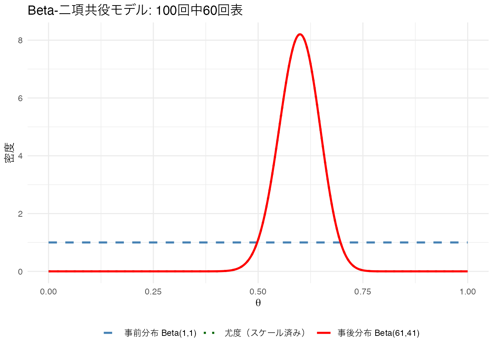
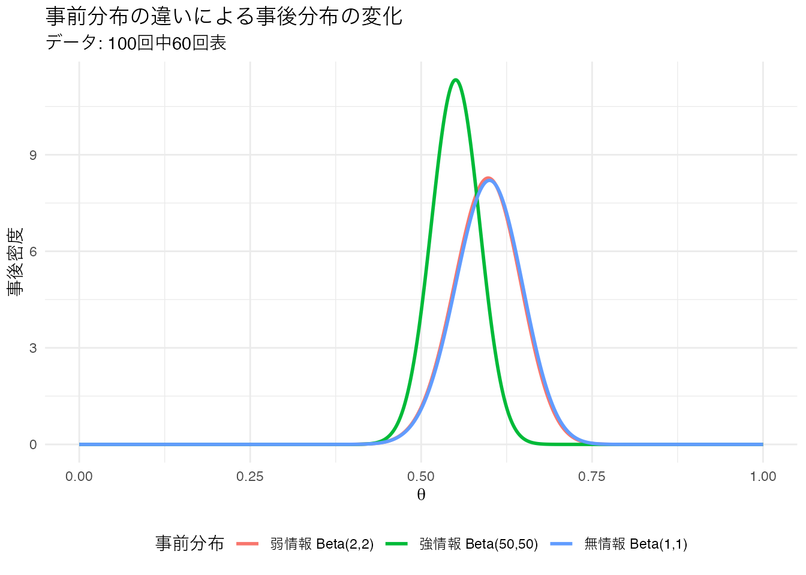
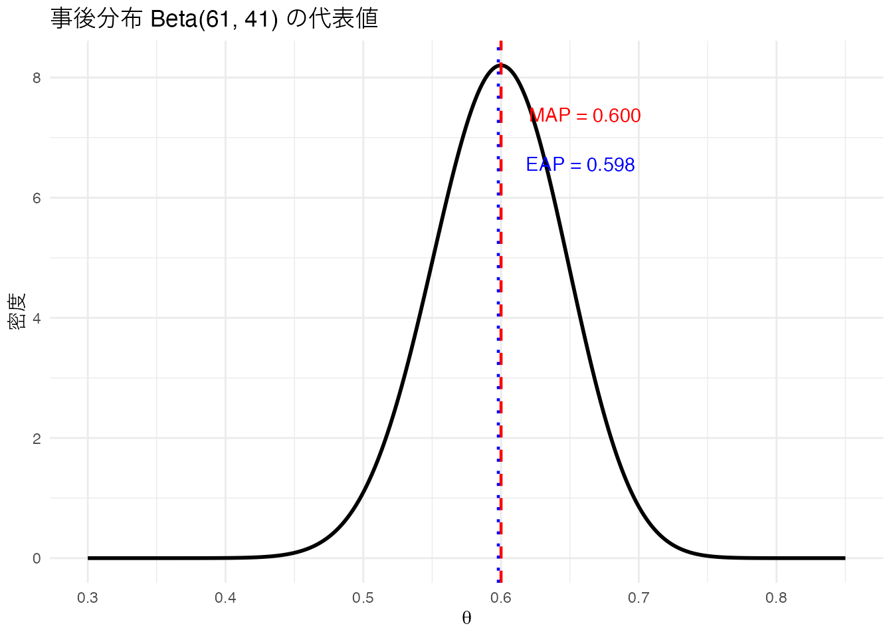
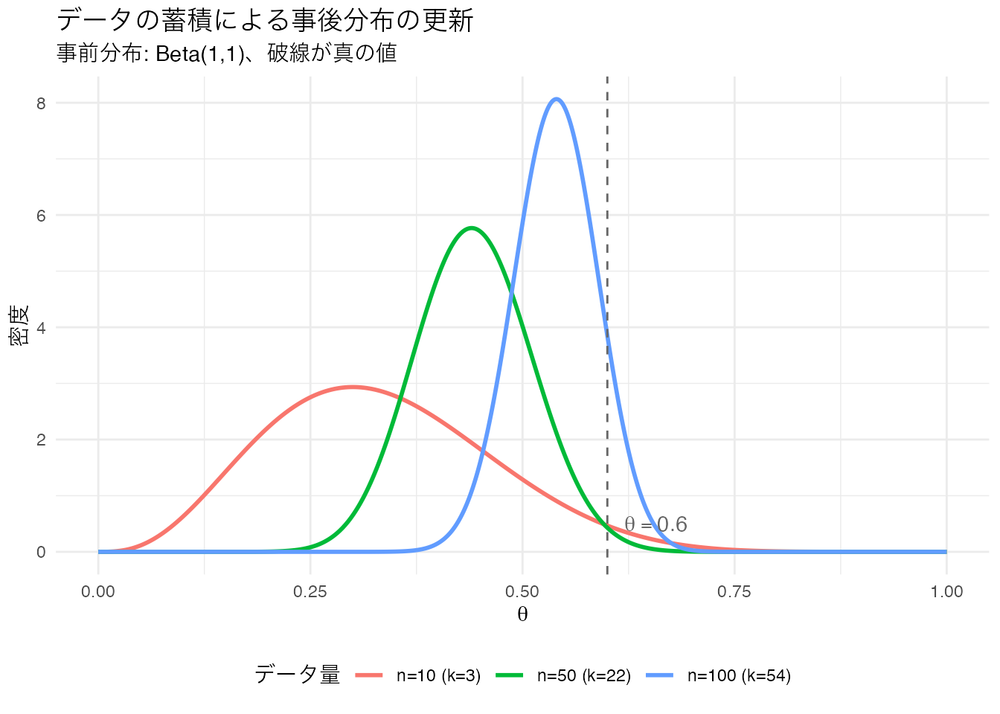
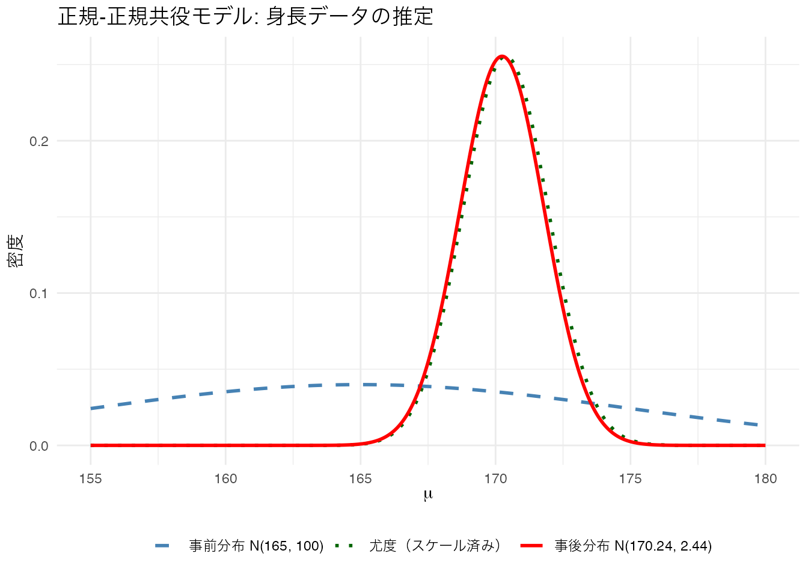
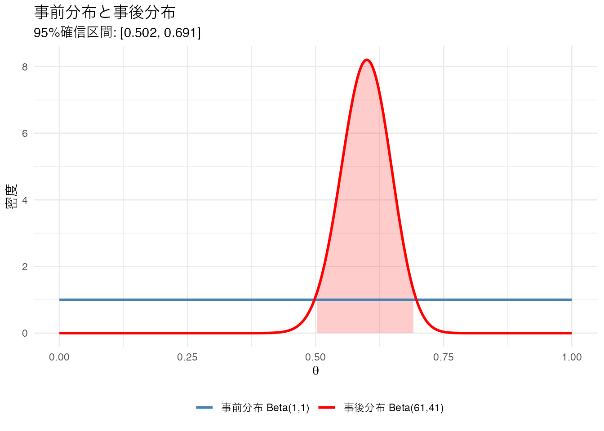
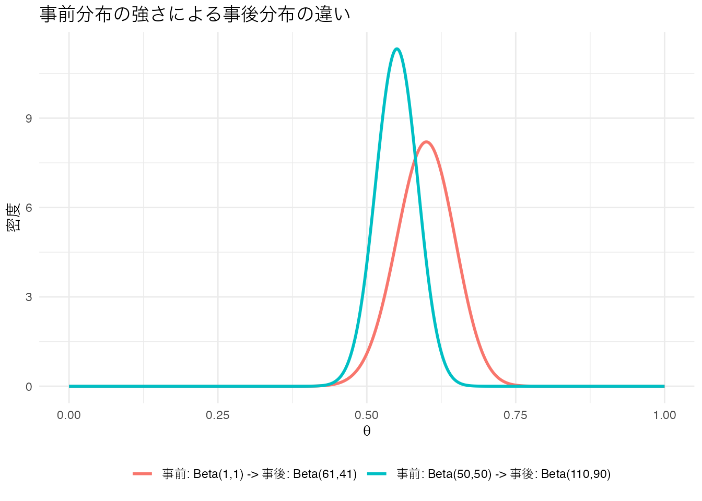
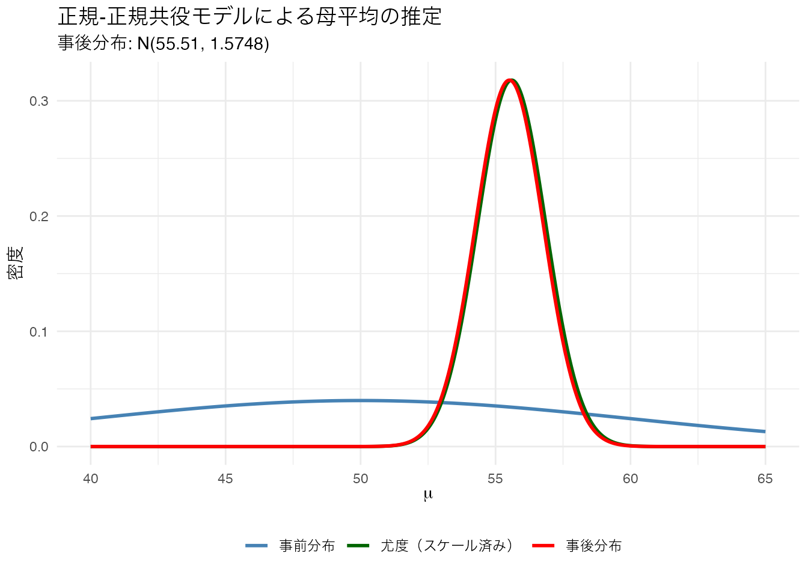
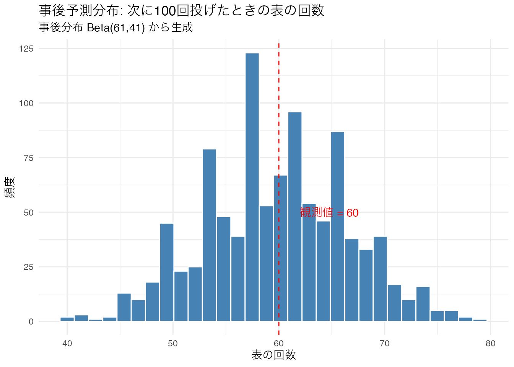
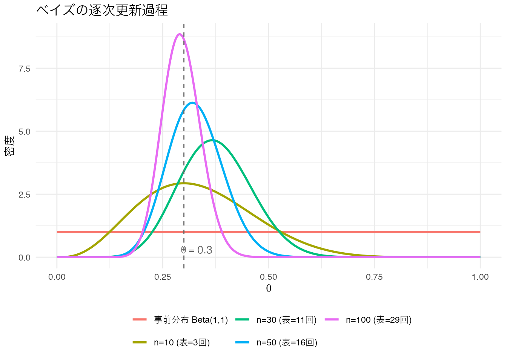

# --- 疫病検査のベイズ計算 ---
# 100万人の世界で考える
population <- 1000000
infected <- population * 0.0005 # 罹患者: 500人
healthy <- population - infected # 健康な人: 999,500人
# 陽性になる人の内訳
true_positive <- infected * 0.70 # 罹患していて陽性: 350人
false_positive <- healthy * 0.001 # 健康だが陽性: 999.5人
# 陽性の人のうち、本当に罹患している確率
prob_infected_given_positive <- true_positive / (true_positive + false_positive)U17. ベイズ統計の基礎
ユニット概要
| 項目 | 内容 |
|---|---|
| 分類 | 枝（選択） |
| 前提 | U12（統計的推測の基礎） |
| 次のユニット | U18（MCMCの原理と実践） |
| 使用データ | シミュレーションデータ |
| 学習目標 | ベイズの定理を理解し、数式と直感の両面で説明できる / 事前分布・尤度・事後分布の関係を理解する / Beta-二項共役モデルをRで計算・可視化できる / 信用区間と確信区間の違いを説明できる / 事前分布の選択が事後分布に与える影響を理解する |
事前知識
頻度主義とベイズの考え方
U12で学んだ統計的推測は 頻度主義（frequentist） と呼ばれるアプローチでした。ここでは「同じ実験を無限に繰り返したら」という仮想的な繰り返しの中で確率を考えます。95%信頼区間は「同じ方法で100回作ると約95回が真の値を含む」という意味であり、「真の値が95%の確率でこの区間にある」とは言えません。
これに対して ベイズ法（Bayesian method） は、確率を 確信の度合い として解釈します。データを得る前の信念（事前分布）を、データから得られる情報（尤度）で更新し、データを踏まえた新しい信念（事後分布）を得ます。この枠組みでは「パラメータが95%の確率でこの区間にある」と素直に言うことができます。
ベイズの定理
ベイズの定理は、条件付き確率を「ひっくり返す」公式です。
\[ P(\theta \mid D) = \frac{P(D \mid \theta) \, P(\theta)}{P(D)} \]
各項の意味は以下のとおりです。
| 記号 | 名称 | 意味 |
|---|---|---|
| \(P(\theta \mid D)\) | 事後分布（posterior） | データ \(D\) を観測した後のパラメータ \(\theta\) の確率分布 |
| \(P(D \mid \theta)\) | 尤度（likelihood） | パラメータ \(\theta\) のもとでデータ \(D\) が得られる確率 |
| \(P(\theta)\) | 事前分布（prior） | データを見る前のパラメータ \(\theta\) についての信念 |
| \(P(D)\) | 周辺尤度（marginal likelihood） | あらゆる \(\theta\) の可能性を合わせたデータの出現確率（正規化定数） |
分母 \(P(D)\) はパラメータ \(\theta\) を含まない定数なので、事後分布の形を考える際には無視できます。そのため、次のような比例関係で書くことが多いです。
\[ P(\theta \mid D) \propto P(D \mid \theta) \times P(\theta) \]
つまり、事後分布は尤度と事前分布の積に比例する ということです。
ベイズの定理の直感的理解: 疫病検査の例
ベイズの定理がどのように「直感に反する結果」を正しく導くかを、検査の例で見てみましょう。
ある疾病は人口の0.05%が罹患しています。この病気の検査では、罹患している人が陽性になる確率は70%、罹患していない人が陽性になる確率は0.1%です。検査で陽性と判定された人が、実際に罹患している確率はどれくらいでしょうか。
答えは約25.9%です。検査で陽性でも、実際に罹患している確率は約26%にすぎません。これは罹患率（事前確率）が非常に低いため、偽陽性の人数が真陽性を上回ってしまうからです。事前確率が重要であることを示す好例です。
事前分布と事後分布: Beta-二項共役モデル
ベイズの定理を具体的に計算するには、事前分布と尤度を掛け合わせて事後分布を求めます。事前分布と事後分布が同じ種類の確率分布になるとき、その事前分布を 共役事前分布（conjugate prior） と呼びます。共役事前分布を使うと、事後分布の形が解析的にわかるため、計算が容易になります。
最も基本的な共役の組み合わせが Beta-二項モデル です。
- データ: コインを \(n\) 回投げて \(k\) 回表が出た（二項分布）
- 事前分布: \(\theta \sim \text{Beta}(\alpha, \beta)\)
- 事後分布: \(\theta \mid k \sim \text{Beta}(\alpha + k, \beta + n - k)\)
事前分布のパラメータ \(\alpha, \beta\) は、「事前に \(\alpha - 1\) 回表、\(\beta - 1\) 回裏を見た」ような情報量に対応します。
具体例として、コインを100回投げて60回表が出た場合を考えます。
# --- Beta-二項共役モデル ---
# データ: 100回中60回表
n <- 100
k <- 60
# 事前分布: Beta(1, 1) = 一様分布（無情報事前分布）
alpha_prior <- 1
beta_prior <- 1
# 事後分布: Beta(1 + 60, 1 + 40) = Beta(61, 41)
alpha_post <- alpha_prior + k
beta_post <- beta_prior + (n - k)
# 確率密度の計算
x <- seq(0, 1, length.out = 1000)
prior <- dbeta(x, alpha_prior, beta_prior)
likelihood <- dbinom(k, n, x)
posterior <- dbeta(x, alpha_post, beta_post)
# 尤度をプロット用にスケーリング（最大値を事後分布の最大値に合わせる）
likelihood_scaled <- likelihood / max(likelihood) * max(posterior)
# 可視化
tibble(
theta = rep(x, 3),
density = c(prior, likelihood_scaled, posterior),
type = rep(c("事前分布 Beta(1,1)", "尤度（スケール済み）", "事後分布 Beta(61,41)"),
each = length(x))
) %>%
dplyr::mutate(type = factor(type, levels = c("事前分布 Beta(1,1)",
"尤度（スケール済み）",
"事後分布 Beta(61,41)"))) %>%
ggplot(aes(x = theta, y = density, color = type, linetype = type)) +
geom_line(linewidth = 1) +
scale_color_manual(values = c("steelblue", "darkgreen", "red")) +
scale_linetype_manual(values = c("dashed", "dotted", "solid")) +
labs(title = "Beta-二項共役モデル: 100回中60回表",
x = expression(theta), y = "密度",
color = "", linetype = "") +
theme_minimal() +
theme(legend.position = "bottom")
事前分布が一様分布（Beta(1,1)）の場合、事後分布の形は尤度関数と同じになります。データの情報がそのまま結果に反映されるということです。
事前分布の選択
事前分布の選び方には大きく3つの方針があります。
- 無情報事前分布（uninformative prior）: 特定の値に偏らない。例: Beta(1, 1) = 一様分布
- 弱情報事前分布（weakly informative prior）: 極端な値を除外する程度の緩い情報。例: Beta(2, 2)
- 強情報事前分布（informative prior）: 先行研究などに基づく強い事前知識。例: Beta(50, 50)
同じデータ（100回中60回表）に対して、異なる事前分布がどのように事後分布を変えるか見てみましょう。
# --- 事前分布の感度分析 ---
priors <- tibble(
name = c("無情報 Beta(1,1)", "弱情報 Beta(2,2)", "強情報 Beta(50,50)"),
alpha = c(1, 2, 50),
beta = c(1, 2, 50)
)
# 各事前分布に対する事後分布を計算
x <- seq(0, 1, length.out = 1000)
plot_data <- priors %>%
dplyr::rowwise() %>%
dplyr::mutate(
data = list(tibble(
theta = x,
prior = dbeta(x, alpha, beta),
posterior = dbeta(x, alpha + 60, beta + 40)
))
) %>%
tidyr::unnest(data)
# 事後分布の比較
plot_data %>%
ggplot(aes(x = theta, y = posterior, color = name)) +
geom_line(linewidth = 1) +
labs(title = "事前分布の違いによる事後分布の変化",
subtitle = "データ: 100回中60回表",
x = expression(theta), y = "事後密度",
color = "事前分布") +
theme_minimal() +
theme(legend.position = "bottom")
無情報事前分布と弱情報事前分布では事後分布にほとんど差がありません。しかし、強情報事前分布 Beta(50,50) では事後分布が0.5方向に引っ張られています。これは「公平なコインだ」という強い事前信念がデータと拮抗しているためです。
データ量が十分に多ければ、事前分布の影響は小さくなり、どの事前分布を使っても事後分布はほぼ同じになります。この性質を 事前分布に対するロバスト性 と呼びます。
確信区間（Credible Interval）
事後分布から、パラメータがどの範囲にありそうかを示す区間を 確信区間（credible interval） と呼びます。
# --- 95%確信区間の計算 ---
ci_lower <- qbeta(0.025, 61, 41)
ci_upper <- qbeta(0.975, 61, 41)Beta(61, 41) の95%確信区間は [0.5017, 0.6907] です。
これは「\(\theta\) が95%の確率でこの区間にある」という意味です。頻度主義の信頼区間（confidence interval）とは解釈が根本的に異なります。
| 頻度主義の信頼区間 | ベイズの確信区間 | |
|---|---|---|
| 解釈 | 同じ方法で繰り返し区間を作ると、約95%が真の値を含む | パラメータが95%の確率でこの区間にある |
| 真の値の扱い | 固定された未知の定数 | 確率分布に従う確率変数 |
| 直感性 | やや難解（「95%の確率でこの区間にある」とは言えない） | 直感的（そのまま確率として解釈できる） |
MAP推定とEAP推定
事後分布を1つの値で代表させる方法が2つあります。
- MAP推定値（Maximum A Posteriori）: 事後分布の最頻値（モード）。「最も確率が高い値」
- EAP推定値（Expected A Posteriori）: 事後分布の期待値（平均）。「確率で重みづけした平均値」
# --- MAP推定値とEAP推定値 ---
# Beta(alpha, beta) の最頻値: (alpha - 1) / (alpha + beta - 2)
# Beta(alpha, beta) の期待値: alpha / (alpha + beta)
map_estimate <- (alpha_post - 1) / (alpha_post + beta_post - 2)
eap_estimate <- alpha_post / (alpha_post + beta_post)
# 可視化
x <- seq(0.3, 0.85, length.out = 1000)
posterior_density <- dbeta(x, alpha_post, beta_post)
tibble(theta = x, density = posterior_density) %>%
ggplot(aes(x = theta, y = density)) +
geom_line(linewidth = 1) +
geom_vline(xintercept = map_estimate, color = "red",
linetype = "dashed", linewidth = 0.8) +
geom_vline(xintercept = eap_estimate, color = "blue",
linetype = "dotted", linewidth = 0.8) +
annotate("text", x = map_estimate + 0.02, y = max(posterior_density) * 0.9,
label = sprintf("MAP = %.3f", map_estimate), color = "red", hjust = 0) +
annotate("text", x = eap_estimate + 0.02, y = max(posterior_density) * 0.8,
label = sprintf("EAP = %.3f", eap_estimate), color = "blue", hjust = 0) +
labs(title = "事後分布 Beta(61, 41) の代表値",
x = expression(theta), y = "密度") +
theme_minimal()
Beta(61, 41) の場合、MAPは0.600、EAPは0.598 で、ほぼ同じです。事後分布が左右対称に近い場合はMAPとEAPの差は小さくなりますが、歪んだ分布では差が生じます。
逐次更新: ベイズの学習過程
ベイズ法の大きな特徴は、データが増えるにつれて事後分布が更新されていく点です。また、ある時点の事後分布を次の分析の事前分布として使うことができます。10回、50回、100回とデータが蓄積されていく過程を可視化してみましょう。
# --- ベイズの逐次更新 ---
set.seed(42)
# 真のパラメータ: theta = 0.6 のコイン
true_theta <- 0.6
all_flips <- rbinom(100, 1, true_theta)
# 各段階での累積データ
stages <- c(10, 50, 100)
x <- seq(0, 1, length.out = 1000)
update_data <- tibble()
for (s in stages) {
flips <- all_flips[1:s]
k_cum <- sum(flips)
n_cum <- s
# 事前分布は常に Beta(1,1) からスタート
post_density <- dbeta(x, 1 + k_cum, 1 + n_cum - k_cum)
update_data <- dplyr::bind_rows(
update_data,
tibble(theta = x, density = post_density,
stage = sprintf("n=%d (k=%d)", s, k_cum))
)
}
update_data %>%
dplyr::mutate(stage = factor(stage, levels = sprintf("n=%d (k=%d)",
stages, sapply(stages, function(s) sum(all_flips[1:s]))))) %>%
ggplot(aes(x = theta, y = density, color = stage)) +
geom_line(linewidth = 1) +
geom_vline(xintercept = true_theta, linetype = "dashed", color = "gray40") +
annotate("text", x = true_theta + 0.02, y = 0.5,
label = expression(theta == 0.6), color = "gray40", hjust = 0) +
labs(title = "データの蓄積による事後分布の更新",
subtitle = "事前分布: Beta(1,1)、破線が真の値",
x = expression(theta), y = "密度", color = "データ量") +
theme_minimal() +
theme(legend.position = "bottom")
データが増えるにつれて、事後分布はどんどん尖って真の値の周辺に集中していきます。これが「ベイズ的な学習」です。
正規分布の場合: 正規-正規共役モデル
正規分布のパラメータを推定する場合にも共役が成り立ちます。母分散 \(\sigma^2\) が既知で、母平均 \(\mu\) に正規分布の事前分布を置く場合を考えます。
- データ: \(x_1, \ldots, x_n \sim N(\mu, \sigma^2)\)（\(\sigma^2\) は既知）
- 事前分布: \(\mu \sim N(\mu_0, \sigma_0^2)\)
- 事後分布: \(\mu \mid \boldsymbol{x} \sim N(\mu_n, \sigma_n^2)\)
ここで事後分布のパラメータは次のように計算されます。
\[ \mu_n = \frac{\frac{\mu_0}{\sigma_0^2} + \frac{n \bar{x}}{\sigma^2}}{\frac{1}{\sigma_0^2} + \frac{n}{\sigma^2}}, \quad \sigma_n^2 = \frac{1}{\frac{1}{\sigma_0^2} + \frac{n}{\sigma^2}} \]
事後分布の平均 \(\mu_n\) は、事前分布の平均 \(\mu_0\) とデータの平均 \(\bar{x}\) の 精度で重みづけした加重平均 になっています。精度とは分散の逆数 \(1/\sigma^2\) のことです。
# --- 正規-正規共役モデルの例 ---
# データ: 10人の身長を測定（母分散は既知で sigma^2 = 25 とする）
set.seed(123)
heights <- rnorm(10, mean = 170, sd = 5)
x_bar <- mean(heights)
n <- length(heights)
sigma2 <- 25 # 既知の母分散
# 事前分布: mu ~ N(165, 100)（あまり確信がない事前知識）
mu0 <- 165
sigma0_sq <- 100
# 事後分布の計算
precision_prior <- 1 / sigma0_sq
precision_data <- n / sigma2
sigma_n_sq <- 1 / (precision_prior + precision_data)
mu_n <- sigma_n_sq * (mu0 / sigma0_sq + n * x_bar / sigma2)
# 可視化
x_range <- seq(155, 180, length.out = 1000)
prior_density <- dnorm(x_range, mu0, sqrt(sigma0_sq))
posterior_density <- dnorm(x_range, mu_n, sqrt(sigma_n_sq))
likelihood_val <- dnorm(x_range, x_bar, sqrt(sigma2 / n))
likelihood_scaled <- likelihood_val / max(likelihood_val) * max(posterior_density)
tibble(
mu = rep(x_range, 3),
density = c(prior_density, likelihood_scaled, posterior_density),
type = rep(c(
sprintf("事前分布 N(%.0f, %.0f)", mu0, sigma0_sq),
"尤度（スケール済み）",
sprintf("事後分布 N(%.2f, %.2f)", mu_n, sigma_n_sq)
), each = length(x_range))
) %>%
dplyr::mutate(type = factor(type, levels = unique(type))) %>%
ggplot(aes(x = mu, y = density, color = type, linetype = type)) +
geom_line(linewidth = 1) +
scale_color_manual(values = c("steelblue", "darkgreen", "red")) +
scale_linetype_manual(values = c("dashed", "dotted", "solid")) +
labs(title = "正規-正規共役モデル: 身長データの推定",
x = expression(mu), y = "密度",
color = "", linetype = "") +
theme_minimal() +
theme(legend.position = "bottom")
事後分布の平均（170.24）は、事前分布の平均（165）とデータの平均（170.37）の間にあり、データの情報量が多い方に引き寄せられていることがわかります。
ベイズファクター
ベイズファクター（Bayes Factor; BF） は、2つのモデル（仮説）を比較するためのベイズ的指標です。
\[ BF_{12} = \frac{P(D \mid \mathcal{M}_1)}{P(D \mid \mathcal{M}_2)} \]
- \(BF_{12} > 1\): モデル1がモデル2よりデータに支持されている
- \(BF_{12} < 1\): モデル2がモデル1よりデータに支持されている
- \(BF_{12} = 1\): どちらも同程度に支持されている
例えば \(BF_{10} = 8\) であれば、対立仮説は帰無仮説の8倍データに支持されているということです。逆に \(BF_{10} = 0.2\) であれば、帰無仮説のほうが5倍支持されていることになります。
頻度主義の検定では「帰無仮説が正しい」とは言えませんでしたが、ベイズファクターを使えば帰無仮説を積極的に支持する証拠を示すこともできます。ただし、ベイズファクターの値に対して機械的な基準（例: 3以上なら支持）を設けると、p値と同じ問題を招く可能性があるため、注意が必要です。
ランクC: 基礎知識
17-C-1
ベイズの定理において、データを観測した後のパラメータの確率分布を何と呼ぶか。
17-C-2
ベイズの定理の式 \(P(\theta \mid D) \propto P(D \mid \theta) \times P(\theta)\) において、\(P(D \mid \theta)\) は何を表すか。
17-C-3
事前分布と事後分布が同じ種類の確率分布になるとき、その事前分布を何と呼ぶか。
17-C-4
二項分布の尤度に対する共役事前分布はどの分布か。
17-C-5
ベイズの確信区間（credible interval）について、正しい解釈はどれか。
17-C-6
事後分布の最頻値をもとにした推定値を何と呼ぶか。
17-C-7
事後分布の期待値をもとにした推定値を何と呼ぶか。
17-C-8
無情報事前分布として Beta(1, 1) を使った場合、コインを10回投げて7回表が出たとき、事後分布は何になるか。
17-C-9
データの量が十分に多い場合、事前分布の影響はどうなるか。
17-C-10
ベイズファクター \(BF_{10} = 5\) は何を意味するか。
ランクB: 実践スキル
17-B-1
事前分布 Beta(1, 1) と事後分布 Beta(61, 41) を1つのグラフに描きなさい。事後分布の95%確信区間を塗りつぶしで示すこと。
x <- seq(0, 1, length.out = 1000)
prior <- dbeta(x, 1, 1)
posterior <- dbeta(x, 61, 41)
# 95%確信区間
ci_lower <- qbeta(0.025, 61, 41)
ci_upper <- qbeta(0.975, 61, 41)
# 確信区間内のデータを抽出
ci_region <- tibble(theta = x, density = posterior) %>%
dplyr::filter(theta >= ci_lower & theta <= ci_upper)
tibble(theta = rep(x, 2),
density = c(prior, posterior),
type = rep(c("事前分布 Beta(1,1)", "事後分布 Beta(61,41)"), each = length(x))) %>%
ggplot(aes(x = theta, y = density, color = type)) +
geom_area(data = ci_region, aes(x = theta, y = density),
fill = "red", alpha = 0.2, inherit.aes = FALSE) +
geom_line(linewidth = 1) +
scale_color_manual(values = c("steelblue", "red")) +
labs(title = "事前分布と事後分布",
subtitle = sprintf("95%%確信区間: [%.3f, %.3f]", ci_lower, ci_upper),
x = expression(theta), y = "密度", color = "") +
theme_minimal() +
theme(legend.position = "bottom")
17-B-2
事前分布を Beta(50, 50)（「公平なコインだ」という強い信念）に変えて、100回中60回表のデータで事後分布を計算しなさい。Beta(1,1) を事前分布とした場合の事後分布と比較するグラフを作成し、事後分布の平均と95%確信区間を報告すること。
x <- seq(0, 1, length.out = 1000)
# 弱い事前分布
post_weak <- dbeta(x, 1 + 60, 1 + 40)
eap_weak <- (1 + 60) / (1 + 60 + 1 + 40)
ci_weak <- qbeta(c(0.025, 0.975), 61, 41)
# 強い事前分布
post_strong <- dbeta(x, 50 + 60, 50 + 40)
eap_strong <- (50 + 60) / (50 + 60 + 50 + 40)
ci_strong <- qbeta(c(0.025, 0.975), 110, 90)
tibble(
theta = rep(x, 2),
density = c(post_weak, post_strong),
type = rep(c("事前: Beta(1,1) -> 事後: Beta(61,41)",
"事前: Beta(50,50) -> 事後: Beta(110,90)"), each = length(x))
) %>%
ggplot(aes(x = theta, y = density, color = type)) +
geom_line(linewidth = 1) +
labs(title = "事前分布の強さによる事後分布の違い",
x = expression(theta), y = "密度", color = "") +
theme_minimal() +
theme(legend.position = "bottom")
# 数値の比較
comparison <- tibble(
事前分布 = c("Beta(1,1)", "Beta(50,50)"),
EAP = c(eap_weak, eap_strong),
CI下限 = c(ci_weak[1], ci_strong[1]),
CI上限 = c(ci_weak[2], ci_strong[2])
)
knitr::kable(comparison, digits = 4,
caption = "事前分布による事後分布の比較")| 事前分布 | EAP | CI下限 | CI上限 |
|---|---|---|---|
| Beta(1,1) | 0.598 | 0.5017 | 0.6907 |
| Beta(50,50) | 0.550 | 0.4808 | 0.6182 |
強い事前分布を使うと、事後分布がデータ（60%）と事前の信念（50%）の間に位置し、確信区間も狭くなっています。
17-B-3
qbeta() を使って、Beta(61, 41) の95%確信区間、90%確信区間、99%確信区間をそれぞれ計算しなさい。結果を表にまとめること。
ci_levels <- c(0.90, 0.95, 0.99)
ci_table <- tibble(
信頼水準 = sprintf("%.0f%%", ci_levels * 100),
下限 = qbeta((1 - ci_levels) / 2, 61, 41),
上限 = qbeta(1 - (1 - ci_levels) / 2, 61, 41),
幅 = 上限 - 下限
)
knitr::kable(ci_table, digits = 4,
caption = "Beta(61, 41) の各水準の確信区間")| 信頼水準 | 下限 | 上限 | 幅 |
|---|---|---|---|
| 90% | 0.5174 | 0.6764 | 0.1590 |
| 95% | 0.5017 | 0.6907 | 0.1889 |
| 99% | 0.4711 | 0.7178 | 0.2467 |
確信水準を高くするほど区間は広くなります。「より確信を持ちたいなら、より広い範囲を許容しなければならない」ということです。
17-B-4
正規-正規共役モデルを使って、以下のデータから母平均を推定しなさい。母分散は \(\sigma^2 = 16\)（既知）とする。事前分布は \(\mu \sim N(50, 100)\) とする。事後分布のパラメータ（平均と分散）を計算し、事前分布・尤度・事後分布を1つのグラフに描くこと。
データ: x <- c(55, 58, 52, 57, 54, 56, 53, 59, 55, 57)
x_data <- c(55, 58, 52, 57, 54, 56, 53, 59, 55, 57)
n <- length(x_data)
x_bar <- mean(x_data)
sigma2 <- 16 # 既知の母分散
# 事前分布
mu0 <- 50
sigma0_sq <- 100
# 事後分布の計算
precision_prior <- 1 / sigma0_sq
precision_data <- n / sigma2
sigma_n_sq <- 1 / (precision_prior + precision_data)
mu_n <- sigma_n_sq * (mu0 / sigma0_sq + n * x_bar / sigma2)
# 可視化
x_range <- seq(40, 65, length.out = 1000)
prior_d <- dnorm(x_range, mu0, sqrt(sigma0_sq))
lik_d <- dnorm(x_range, x_bar, sqrt(sigma2 / n))
post_d <- dnorm(x_range, mu_n, sqrt(sigma_n_sq))
lik_scaled <- lik_d / max(lik_d) * max(post_d)
tibble(
mu = rep(x_range, 3),
density = c(prior_d, lik_scaled, post_d),
type = rep(c("事前分布", "尤度（スケール済み）", "事後分布"), each = length(x_range))
) %>%
dplyr::mutate(type = factor(type, levels = c("事前分布", "尤度（スケール済み）", "事後分布"))) %>%
ggplot(aes(x = mu, y = density, color = type)) +
geom_line(linewidth = 1) +
scale_color_manual(values = c("steelblue", "darkgreen", "red")) +
labs(title = "正規-正規共役モデルによる母平均の推定",
subtitle = sprintf("事後分布: N(%.2f, %.4f)", mu_n, sigma_n_sq),
x = expression(mu), y = "密度", color = "") +
theme_minimal() +
theme(legend.position = "bottom")
# 95%確信区間
ci_normal <- qnorm(c(0.025, 0.975), mu_n, sqrt(sigma_n_sq))事後分布の平均は55.51、95%確信区間は [53.05, 57.97] です。
17-B-5
コイン投げのデータ（100回中60回表）に対して、3種類の事前分布（Beta(1,1), Beta(5,5), Beta(30,30)）を使い、それぞれの事後分布の MAP推定値、EAP推定値、95%確信区間を比較する表を作成しなさい。
# 事前分布の感度分析
k <- 60
n <- 100
priors <- tibble(
prior_name = c("Beta(1,1)", "Beta(5,5)", "Beta(30,30)"),
a_prior = c(1, 5, 30),
b_prior = c(1, 5, 30)
)
sensitivity <- priors %>%
dplyr::mutate(
a_post = a_prior + k,
b_post = b_prior + (n - k),
MAP = (a_post - 1) / (a_post + b_post - 2),
EAP = a_post / (a_post + b_post),
CI_lower = qbeta(0.025, a_post, b_post),
CI_upper = qbeta(0.975, a_post, b_post)
) %>%
dplyr::select(事前分布 = prior_name, 事後分布 = a_post,
MAP, EAP, CI下限 = CI_lower, CI上限 = CI_upper)
# 事後分布の列名を修正
sensitivity <- priors %>%
dplyr::mutate(
a_post = a_prior + k,
b_post = b_prior + (n - k),
post_name = sprintf("Beta(%d,%d)", a_post, b_post),
MAP = (a_post - 1) / (a_post + b_post - 2),
EAP = a_post / (a_post + b_post),
CI_lower = qbeta(0.025, a_post, b_post),
CI_upper = qbeta(0.975, a_post, b_post)
) %>%
dplyr::select(事前分布 = prior_name, 事後分布 = post_name,
MAP, EAP, CI下限 = CI_lower, CI上限 = CI_upper)
knitr::kable(sensitivity, digits = 4,
caption = "事前分布の感度分析")| 事前分布 | 事後分布 | MAP | EAP | CI下限 | CI上限 |
|---|---|---|---|---|---|
| Beta(1,1) | Beta(61,41) | 0.6000 | 0.5980 | 0.5017 | 0.6907 |
| Beta(5,5) | Beta(65,45) | 0.5926 | 0.5909 | 0.4981 | 0.6806 |
| Beta(30,30) | Beta(90,70) | 0.5633 | 0.5625 | 0.4852 | 0.6383 |
事前分布が強くなるほど、推定値が0.5に引き寄せられ、確信区間も狭くなります。
17-B-6
事後予測分布の概念を理解するために、以下のシミュレーションを行いなさい。Beta(61, 41) の事後分布から \(\theta\) を1000回サンプリングし、各 \(\theta\) でコインを100回投げたときの表の回数の分布（事後予測分布）をヒストグラムで描きなさい。
set.seed(42)
# 事後分布からthetaをサンプリング
theta_samples <- rbeta(1000, 61, 41)
# 各thetaでコインを100回投げる
predicted_heads <- rbinom(1000, size = 100, prob = theta_samples)
tibble(heads = predicted_heads) %>%
ggplot(aes(x = heads)) +
geom_histogram(bins = 30, fill = "steelblue", color = "white") +
geom_vline(xintercept = 60, color = "red", linetype = "dashed") +
annotate("text", x = 62, y = 50, label = "観測値 = 60",
color = "red", hjust = 0) +
labs(title = "事後予測分布: 次に100回投げたときの表の回数",
subtitle = "事後分布 Beta(61,41) から生成",
x = "表の回数", y = "頻度") +
theme_minimal()
事後予測分布は「このモデルが正しいなら、次のデータはどのような値を取りうるか」を示します。観測値（60回）がこの分布の中心付近にあるかを確認することで、モデルの妥当性を評価できます（事後予測チェック）。
17-B-7
同じデータ（コイン100回中60回表）に対して、頻度主義の95%信頼区間とベイズの95%確信区間を比較しなさい。それぞれの区間と解釈の違いを確認すること。
# データ
n <- 100
k <- 60
p_hat <- k / n
# --- 頻度主義: Wald信頼区間 ---
se <- sqrt(p_hat * (1 - p_hat) / n)
z_crit <- qnorm(0.975)
freq_ci <- c(p_hat - z_crit * se, p_hat + z_crit * se)
# --- 頻度主義: 正確な二項検定の信頼区間 ---
exact_test <- binom.test(k, n)
exact_ci <- exact_test$conf.int
# --- ベイズ: Beta(61, 41) の95%確信区間 ---
bayes_ci <- qbeta(c(0.025, 0.975), 61, 41)
# 結果の比較
ci_comparison <- tibble(
方法 = c("Wald信頼区間", "正確な二項信頼区間", "ベイズ確信区間"),
点推定 = c(p_hat, p_hat, 61 / 102),
下限 = c(freq_ci[1], exact_ci[1], bayes_ci[1]),
上限 = c(freq_ci[2], exact_ci[2], bayes_ci[2]),
幅 = 上限 - 下限
)
knitr::kable(ci_comparison, digits = 4,
caption = "頻度主義とベイズの区間推定の比較")| 方法 | 点推定 | 下限 | 上限 | 幅 |
|---|---|---|---|---|
| Wald信頼区間 | 0.600 | 0.5040 | 0.6960 | 0.1920 |
| 正確な二項信頼区間 | 0.600 | 0.4972 | 0.6967 | 0.1995 |
| ベイズ確信区間 | 0.598 | 0.5017 | 0.6907 | 0.1889 |
数値的にはほぼ同じ結果ですが、解釈が異なります。頻度主義の信頼区間は「この方法で繰り返し区間を作ると、約95%が真の値を含む」であるのに対し、ベイズの確信区間は「パラメータが95%の確率でこの区間にある」と直接解釈できます。
17-B-8
ベイズの逐次更新を可視化しなさい。真のパラメータ \(\theta = 0.3\) のコインを使い、事前分布 Beta(1,1) から始めて、10回、30回、50回、100回データが増えるたびに事後分布がどう変化するかを1つのグラフに重ねて描くこと。
set.seed(2024)
true_theta <- 0.3
all_flips <- rbinom(100, 1, true_theta)
stages <- c(10, 30, 50, 100)
x <- seq(0, 1, length.out = 1000)
update_plot <- tibble()
for (s in stages) {
k_cum <- sum(all_flips[1:s])
post_d <- dbeta(x, 1 + k_cum, 1 + s - k_cum)
update_plot <- dplyr::bind_rows(
update_plot,
tibble(theta = x, density = post_d,
stage = sprintf("n=%d (表=%d回)", s, k_cum))
)
}
# 事前分布も追加
update_plot <- dplyr::bind_rows(
tibble(theta = x, density = dbeta(x, 1, 1), stage = "事前分布 Beta(1,1)"),
update_plot
)
stage_levels <- c("事前分布 Beta(1,1)",
sprintf("n=%d (表=%d回)", stages,
sapply(stages, function(s) sum(all_flips[1:s]))))
update_plot %>%
dplyr::mutate(stage = factor(stage, levels = stage_levels)) %>%
ggplot(aes(x = theta, y = density, color = stage)) +
geom_line(linewidth = 1) +
geom_vline(xintercept = true_theta, linetype = "dashed", color = "gray40") +
annotate("text", x = true_theta + 0.03, y = 0.3,
label = expression(theta == 0.3), color = "gray40") +
labs(title = "ベイズの逐次更新過程",
x = expression(theta), y = "密度", color = "") +
theme_minimal() +
theme(legend.position = "bottom") +
guides(color = guide_legend(nrow = 2))
データが増えるにつれて事後分布が真の値 0.3 の周辺に集中していく様子がわかります。最初の事前分布 Beta(1,1) は平らですが、データの蓄積とともに情報が更新されていきます。
ランクA: AI協働
17-A-1
あなたが卒業研究で質問紙調査を行い、ある尺度の得点について「集団の平均が理論的中間点と異なるか」を検討するとします。生成AIに以下を相談してください。
- このリサーチクエスチョンに対して、頻度主義的アプローチ（1標本t検定）とベイズ的アプローチ（正規-正規共役モデル）の両方でどのように分析するかを聞く
- 「事前分布をどう設定すべきか」についてAIに相談し、無情報事前分布と先行研究に基づく情報事前分布の2パターンを検討する
- AIが提案したRコードを実行し、両アプローチの結果を比較する
- 結果の解釈の違い（「差がないとは言えない」vs「95%の確信度で差がある」）について、自分の言葉でまとめる
AIの回答を鵜呑みにせず、事前知識セクションの内容と照らし合わせて検証すること。
17-A-2
「頻度主義 vs ベイズ」の論争は統計学の歴史の中で長く続いてきました。生成AIに以下を質問し、自分の考えをまとめてください。
- 頻度主義とベイズ主義それぞれの長所・短所を聞く
- 「事前分布は主観的だから科学的でない」というフィッシャーの批判に対して、ベイズ側はどのように反論するか
- 心理学の研究実践において、どちらのアプローチが適しているか（または使い分けるべきか）についてAIの意見を聞く
- 上記を踏まえて、自分が卒業研究でどちらのアプローチを採用するか（または併用するか）について、500字程度で自分の考えを述べる
まとめ
このユニットで学んだこと:
- ベイズの定理: \(P(\theta \mid D) \propto P(D \mid \theta) \times P(\theta)\)。事後分布は尤度と事前分布の積に比例する
- 事前分布の選択: 無情報・弱情報・強情報の3種類があり、データが多ければ事前分布の影響は小さくなる
- 共役事前分布: Beta-二項、正規-正規など、事後分布の形が解析的にわかる組み合わせ
- 確信区間: 「パラメータが95%の確率でこの区間にある」と解釈できる（頻度主義の信頼区間とは異なる）
- MAP推定とEAP推定: 事後分布の最頻値と期待値。それぞれ異なる代表値を与える
- 逐次更新: データが蓄積されるにつれ、事後分布は真の値に収束していく
- ベイズファクター: 2つのモデルの相対的な支持度を示す指標
次のU18（MCMCの原理と実践）では、解析的に計算できない複雑なモデルに対して、マルコフ連鎖モンテカルロ法で事後分布を近似する方法を学びます。